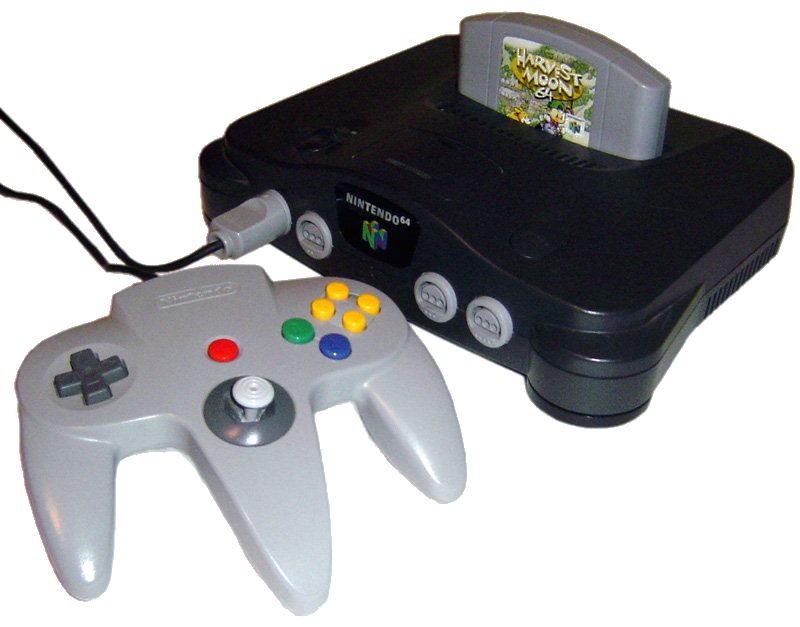

The Nintendo 64 (N64), is a console created by the company Nintendo. It was released in America in September in 1996. It was the last major console to use an ROM cartridge as its primary storage format. Since it was a fifth generation console, it mainly competed with Sony’s Playstation One and Sega’s Sega Saturn. The final design was named after its 64-bit CPU, which aided in the console's 3D capabilities. Its design was mostly completed by mid-1995, but its release was pushed back to 1996 for the completion of its launch games, Super Mario 64, Pilotwings 64, and the Japanese-exclusive Saikyō Habu Shōgi.